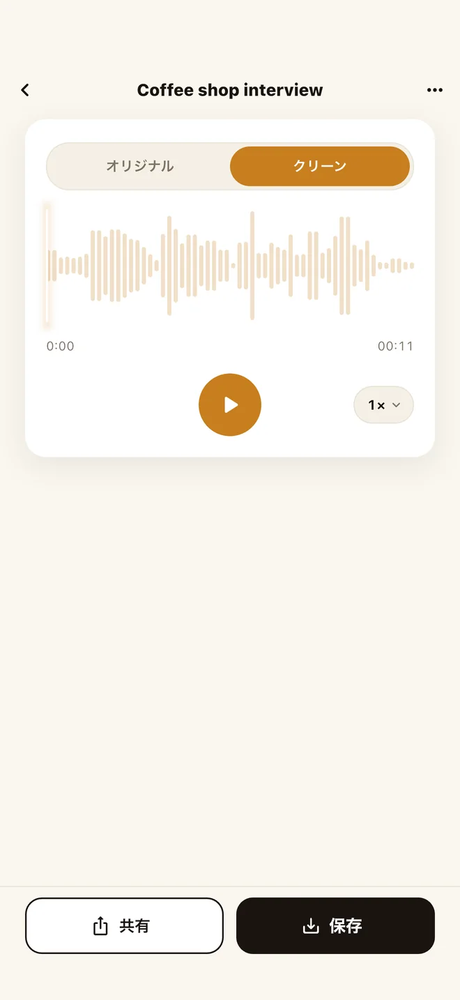
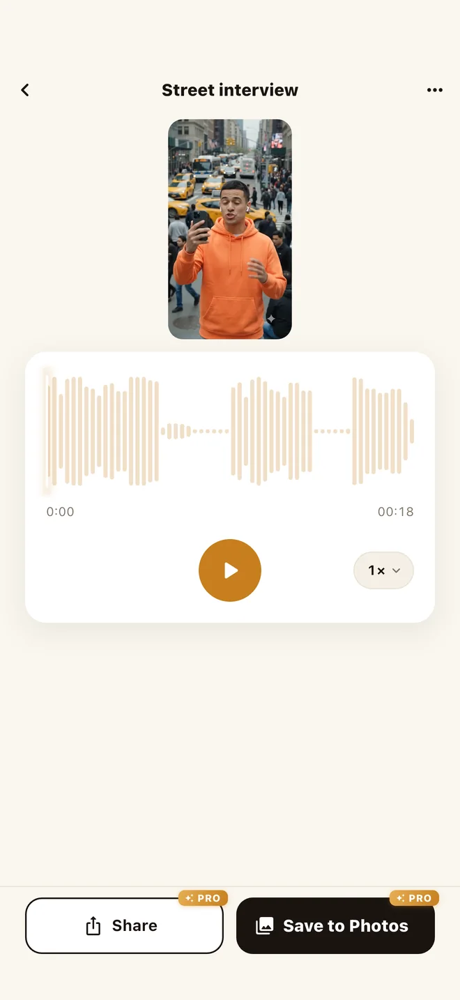

ひと目で比較
多くの人がまず知りたい4つのポイントです。出典つきの詳細は、下の詳しい比較表にあります。
| アプリ | アップロードなし | アカウント不要 | オフラインで動作 | 無料で保存 |
|---|---|---|---|---|
| NoisyNo | ✓はい | ✓はい | ✓はい | ✓はい |
| Denoise | ✓はい | –記載なし | –記載なし | 有料 |
| Denoise.FX | ✓はい | –記載なし | ✓はい | –記載なし |
| Audio Cleaner | ✓はい | –記載なし | –記載なし | –記載なし |
| PureVoice | ✓はい | –記載なし | ✓はい | 無料と記載 |
| NoiseKill | ✓はい | ✓はい | ✓はい | 広告付き |
| Offline AI Video Noise Remover | ✓はい | ✓はい | ✓はい | 1日2回 |
| Adobe Podcast | ✗いいえ | ✗いいえ | ✗いいえ | 1日1時間 |
| LALAL.AI | ✗いいえ | ✗いいえ | スマホでは不可 | プレビューのみ |
✓ はい · ✗ いいえ · – 提供元の記載なし
詳しい比較表
同じ9つのアプリについて、それぞれの答えの根拠となる詳細です。最初の7つはスマホ上で処理し、最後の2つはクラウドサービスです。価格は米国の App Store、Google Play、または提供元の価格で、提供元が明らかにしていない点は記載なしとしています。
表を横にスクロールすると、すべての列を見られます →
各提供元の説明に基づくノイズ除去アプリ（2026年11月26日確認）。上付きの数字は出典へのリンクです。
| アプリ | 音声をサーバーにアップロード？ | アカウントは必要？ | 料金体系 | 対応プラットフォーム | 無料の範囲・書き出しの制限 | オフラインで使える？ | 動画も処理できる？ |
|---|---|---|---|---|---|---|---|
| 端末上で処理 | |||||||
| NoisyNoGrayForge（当サイト） | いいえ。ファイルは端末上で処理され、限定的な診断にファイル名や音声は含まれません。12 | いいえ。13 | 無料ダウンロード。ノイズ除去はどんな長さでも無料。Pro：買い切り、サブスクなし。iPhone・iPad・Android は $5.99、Mac は別途購入で $7.99。23 | iPhone、iPad（iOS 15 以降）、Mac（macOS 13.4 以降）、Android234 | きれいにした音声は M4A（AAC）で、無料・長さの制限なし。ロスレス WAV、処理済み動画、一括処理、ラウドネスの正規化、トリミングは Pro が必要です。12 | はい（インストール後）。13 | はい。無料版はきれいにした音声を保存。Pro なら音声だけを差し替えた動画として受け取れます。2 |
| Denoise: AI Noise RemoverRoutes Software SRL | いいえ。ストアの説明に、何もアップロードしないとあります。5 | 記載なし5 | 無料ダウンロード。書き出し3回分が $1.99、または Denoise Pro（買い切り $14.99 か月額サブスク）。5 | iPhone、iPad（iOS 17 以降）、Apple シリコン搭載 Mac5 | 処理と試聴は無料。保存・共有には Pro か書き出しパックが必要。M4A、WAV、動画。5 | 記載なし。すべて端末上で動作します。5 | はい。5 |
| Denoise.FX for Audio & VideoAndrey Ivankin | いいえ。処理は端末上で行われます。6 | 記載なし6 | 無料ダウンロード。プレミアム項目：週額（$3.99 または $4.99）、「Early」（$29.99 または $39.99）、買い切り（$39.99 または $49.99）。6 | iPhone（iOS 15 以降）、Apple シリコン搭載 Mac6 | 無料の範囲は記載なし。音声は選んだ形式で、動画は写真アプリに保存します。6 | はい。インターネット接続は不要です。6 | はい。6 |
| Audio Cleaner: AI DenoiseKnotSmith Ltd. | いいえ。ノイズ除去は iPhone 上でローカルに動作します。7 | 記載なし7 | 無料ダウンロード。プレミアム：週 $3.99、年 $9.99、または買い切り $19.99。ほかに $2.99〜$7.99 のプレミアム項目。7 | iPhone（iOS 18 以降）、Apple シリコン搭載 Mac7 | 無料の範囲は記載なし。MP3、WAV、AAC、M4A、および MP4 か MOV の動画で書き出し。7 | 記載なし。処理は端末上で行われます。7 | はい。7 |
| Noise Reducer, PureVoiceOWLMYST | いいえ。ストアの説明に、音声は端末の外に出ないとあります。89 | 記載なし89 | 無料ダウンロード。説明ではすべての機能が無料とされる一方、App Store には $19.99 の Lifetime 購入もあります。89 | iPhone（iOS 15.6 以降）、Apple シリコン搭載 Mac、Android89 | 処理できる長さは無制限とされています。MP3、WAV、M4A。Lifetime で何が解放されるかは記載なし。89 | はい。89 | 記載なし89 |
| NoiseKill: AI Noise RemoverShahLabs | いいえ。ストアの説明に、サーバーには何も送らないとあります。10 | いいえ。10 | 無料（広告で運営）。アプリ内課金の記載なし。10 | Android のスマホ、タブレット、Chromebook、Android TV10 | 無料、ウォーターマークなし。きれいにしたファイルはギャラリーに保存されます。10 | はい。10 | はい。MP4、MOV、MKV。10 |
| Offline AI Video Noise RemoverAreeb Labs | いいえ。アプリにインターネットの権限がありません。11 | いいえ。11 | 無料。Pro：買い切り、サブスクなし。11 | Android11 | 無料：1日2回までフルの長さで保存、ウォーターマークなし。Pro：保存は無制限。MP4 動画、M4A 音声。11 | はい。11 | はい。映像はそのままコピーされます。11 |
| クラウドで処理 | |||||||
| Adobe Podcast Enhance SpeechAdobe、ウェブアプリ | はい。ウェブアプリにファイルをアップロードします。12 | はい。無料プランも登録から始まります。12 | 無料プランあり。Firefly Pro プラン（Adobe Podcast Premium を含む）：12月6日までのキャンペーンで、最初の6か月は月額 $9.99。12 | ウェブブラウザ12 | 無料：音声のみ、1度に1ファイル、30分・500 MB まで、1日1時間まで。有料：1ファイル2時間・1 GB まで、1日4時間まで。12 | いいえ。ウェブ上で動作します。12 | 有料プランのみ（MP4、MOV など）12 |
| LALAL.AI Voice Cleanerlalal.ai | はい。スマホアプリでは、すべての処理が LALAL.AI のクラウドサーバーで行われるとしています。131415 | はい。1314 | 無料の Starter（10分）。Lite は年 $90、Pro は年 $180。買い切りの追加購入は $50 から。16 | iPhone、iPad、Android、ウェブ、デスクトップ131416 | 無料プランはプレビューのみで、結果をすべてダウンロードするには有料プランが必要。ファイルサイズは無料で 200 MB、有料で 2 GB まで。1316 | いいえ（iPhone・Android）。1314 | はい（ウェブ）：MP4、MOV、MKV、AVI、M4V。15 |
ストアの掲載情報は頻繁に変わります。App Store の「App のプライバシー」と Google Play の「データ セーフティ」は開発者自身が記入するもので、Apple も自社のラベルは検証されていないと注記しています。
調べ方
NoisyNo を作っているのは GrayForge です。その点を割り引いてお読みください。他のアプリについての事実はすべて、各アプリの米国 App Store・Google Play の掲載情報や提供元のウェブサイトで2026年11月26日に確認したもので、レビューサイトやユーザーレビューによるものはありません。同じ録音をすべてのアプリで処理したわけではないので、仕上がりの音のきれいさで順位はつけていません。ここで取り上げたアプリはどれも無料でダウンロードまたは試用できるので、違いはご自身の耳で確かめられます。
NoisyNo の無料版と Pro
ノイズ除去はどんな長さでも無料、アカウントも不要で、きれいにした音声は M4A（AAC）で保存されます。Pro はサブスクではなく買い切りで、iPhone・iPad・Android は $5.99、別途購入となる Mac 版は $7.99 です。23



Pro では、処理済み動画の書き出し、16-bit のロスレス WAV、一括処理、オーディオブック（−18 LUFS）・ポッドキャスト（−16 LUFS）・動画や配信（−14 LUFS）を目標にしたラウドネスの正規化、処理前のトリミングが使えます。2
表には載らないこと
- NoisyNo は、声の下に居座る一定したノイズの層（ハム、ヒス、ファン、エアコン、風、室内の反響、車の音）を取り除くアプリで、音楽ではなく話し声向けに調整されています。ここで取り上げた端末内アプリのうち、App Store と Google Play の両方にあるのは NoisyNo と PureVoice だけです。12 一連の流れは端末内での手順ガイドで紹介しています。
- Denoise は機能がいちばん豊富です。室内の反響の軽減、音量の均一化、録音しながらの処理、編集、長い間（ま）の短縮、声と音楽の分離もでき、文字起こしの時間も販売しています。5
- Denoise.FX は、ここで取り上げた iPhone の端末内アプリの中で評価の件数がいちばん多いアプリです（米国で435件、星4.5）。アルゴリズムを手動で調整したり周波数フィルタを加えたりでき、プライバシーラベルには購入履歴とユーザ ID がユーザに関連付けられたデータとして記載されています。6
- Audio Cleaner には、前後を聴き比べられる強さの調整のほか、EQ、エフェクト、プリセットがあり、パソコンから Wi-Fi 経由でファイルを受け取れます。7
- PureVoice は両方のストアでデータを収集しないとしていますが、どちらの掲載情報も最終更新は2025年8月です。89
- NoiseKill は、ファイル全体を処理する前に短い A/B プレビューを再生でき、Gentle・Balanced・Strong の設定があります。ダウンロード数は100以上の小さなアプリです。10
- Offline AI Video Noise Remover は、再生中に長押しするとオリジナルを聴け、小さな話し声を持ち上げるボイスブーストもあります。新しいアプリで、現在のバージョンが最初のリリースです。11
- Adobe Podcast の有料プランは Adobe の Firefly Pro プランに含まれ、動画、一括アップロード、強さの設定が加わります。Kapwing とあわせてボイスメモの比較記事で取り上げています。12
- LALAL.AI の Voice Cleaner は、背景の音楽、マイクの低いゴロゴロ音、破裂音も取り除け、De-Echo（反響除去）の設定もあります。15
ほかにも検討の価値があるもの：ポッドキャスター向けにノイズと残響を抑えるウェブサービスの Auphonic（ジングル付きで月2時間まで無料）1718、iPhone の Audio Noise Remover & Reducer（無料で「データの収集なし」のラベルだが、iOS 26 専用）19、 Android では、権限をまったく宣言していない Noise Reducer: Clean Audio20 と NoiseFix21。iPhone のボイスメモアプリに標準の「録音の補正」については、ボイスメモの録音の補正 vs NoisyNo のページで取り上げています。
どれをいつ使うか
- きれいにしたファイルを無料で保存・送信したい。NoisyNo なら、きれいにした M4A 音声をどんな長さでも無料で保存できます。Android では NoiseKill（広告付き）と Offline AI Video Noise Remover（1日2回まで）も無料です。
- 声が動画の中にあり、動画のまま受け取りたい。Android では NoiseKill と Offline AI Video Noise Remover が無料で動画を保存できます。iPhone では Denoise が購入後に動画を保存でき、NoisyNo も Pro で同様です。Denoise.FX と Audio Cleaner も動画を保存できますが、無料の範囲は書かれていません。
- きれいにするだけでなく編集もしたい。Denoise は録音、トリミング、結合、間の短縮、文字起こしができ、Audio Cleaner には EQ とプリセットがあります。
- iPhone と Android の両方、または Mac を使う。NoisyNo は3つすべてで動きます。PureVoice も両方のストアにありますが、2025年8月から更新されていません。
- 録音が機密（会議、取材、診察など）：端末内アプリならどれでも、他社のサーバーに置かずに済みます。詳しくは会議録音をきれいにする方法で。
- アプリをインストールできないパソコンで、クリップも機密ではない：ブラウザで Adobe Podcast か LALAL.AI を。登録、アップロード、無料プランの制限があることは覚悟してください。
「オフライン」を自分で確かめる
ストアの説明を書くのは、アプリを売る側です（私たちも含めて）。2分あれば、もっと多くのことが分かります：
- Wi-Fi をオフにして機内モードをオンにし、短い録音をきれいにしてみます。最後まで終われば、処理はスマホの中で行われています。
- 処理の前にサインイン画面が出るなら、ファイルはアカウントに紐づきます。プライバシーポリシーを読んで、ファイルがどう扱われるかを確認してください。
- プライバシーの項目を読みます（App Store の「App のプライバシー」、Google Play の「データ セーフティ」）。どちらも開発者が記入するものだという点は頭に置いておきましょう。
最初から録音されなかったノイズは、取り除く必要がありません。ファンやエアコンから離れ、話す人にスマホを近づけ、iPhone なら録音中に「声を分離」を試してください。
よくある質問
オフラインで使えるノイズ除去アプリはどれですか？
iPhone では NoisyNo、Denoise.FX、PureVoice、Android では NoisyNo、NoiseKill、Offline AI Video Noise Remover、PureVoice が、インターネット接続なしで録音をきれいにできるとしています。Denoise と Audio Cleaner は、すべて端末上で動くとしていますが、「オフライン」という言葉は使っていません。Adobe Podcast と LALAL.AI のスマホアプリは、自社のサーバーでファイルを処理します。
ウォーターマークや保存の制限がない無料のノイズ除去アプリはありますか？
NoisyNo は、きれいにした音声をどんな長さでも M4A で無料保存でき、アカウントも不要です。Android では、NoiseKill が広告付きで無料・ウォーターマークなし、Offline AI Video Noise Remover は1日2ファイルまで無料で保存できます。Denoise は保存が有料、Adobe Podcast の無料プランは1日1時間まで、LALAL.AI の無料プランは結果のプレビューのみです。
Adobe Podcast と LALAL.AI は録音をアップロードしますか？
はい。Adobe Podcast Enhance Speech は登録後にアップロードしたファイルを処理し、LALAL.AI の iOS・Android のページには、すべての処理がクラウドサーバーで行われ、アカウントが必要だと書かれています。
NoisyNo は無料ですか？
はい。ノイズ除去はどんな長さでも無料で、M4A で保存でき、アカウントも不要です。Pro は買い切りで、iPhone・iPad・Android は $5.99、Mac 版は $7.99。動画の書き出し、WAV、一括処理、ラウドネスの正規化、トリミングが加わります。
出典
すべてのページは2026年11月26日に確認しました。価格は、その日にページに表示されていた米国の価格です。
- NoisyNo product page（GrayForge）· https://grayforge.app/noisyno/端末内処理、アカウント不要、インストール後はオフラインで動作、対応形式、Pro の機能、サブスクなし、対応プラットフォーム。2026-11-26 確認。
- GrayForge llms.txt, NoisyNo section · https://grayforge.app/llms.txt取り除けるノイズ、音楽ではなく話し声向けの調整、入出力の形式、Pro の有無による動画の扱い、Pro の機能と買い切り価格、Mac 版 Pro の別途購入。2026-11-26 確認。
- NoisyNo: Voice Noise Remover、App Store（米国）· https://apps.apple.com/us/app/id6772728543アプリ内課金（NoisyNo Pro $5.99、Mac 版は $7.99）、iOS 15・iPadOS 15・macOS 13.4 の動作要件、アップロードなし・アカウントなし。2026-11-26 確認。
- NoisyNo: Voice Noise Remover、Google Play（米国）· https://play.google.com/store/apps/details?id=com.grayforge.noisynoAndroid の掲載情報、端末内モデル、クラウドなし・アカウントなし。2026-11-26 確認。
- Denoise: AI Noise Remover、App Store（米国）· https://apps.apple.com/us/app/id946423200何もアップロードしないこと、端末上で動作、処理と試聴は無料、保存には Pro か書き出しパックが必要、アプリ内課金の価格、M4A/WAV/動画の書き出し、編集と文字起こしの機能、互換性。2026-11-26 確認。
- Denoise.FX for Audio & Video、App Store（米国）· https://apps.apple.com/us/app/id1623119654インターネット接続不要の端末内処理、アプリ内課金の価格、動画対応、バージョン 3.0 のモード、互換性、評価、App のプライバシーのラベル。2026-11-26 確認。
- Audio Cleaner: AI Denoise、App Store（米国）· https://apps.apple.com/us/app/id6751505212ノイズ除去はローカルで動作、アプリ内課金の価格、書き出し形式、動画対応、EQ とプリセット、iOS 18 の動作要件。2026-11-26 確認。
- Noise Reducer, PureVoice、App Store（米国）· https://apps.apple.com/us/app/id6748527663オフライン、アップロードなし、Lifetime $19.99、「すべての機能が無料」という表現、MP3/WAV/M4A、互換性、「データの収集なし」のラベル、最終更新2025年8月。2026-11-26 確認。
- Noise Reducer, PureVoice、Google Play（米国）· https://play.google.com/store/apps/details?id=com.owlmyst.ai.purvoiceオフライン、アップロードなし、アプリ内課金、データの収集なし、2025年8月27日更新。2026-11-26 確認。
- NoiseKill: AI Noise Remover、Google Play（米国）· https://play.google.com/store/apps/details?id=com.mcore.noisekill端末内、インターネット不要、アカウント不要、ウォーターマークなし、広告あり、動画と音声の形式、対応デバイス、データ セーフティ。2026-11-26 確認。
- Offline AI Video Noise Remover、Google Play（米国）· https://play.google.com/store/apps/details?id=com.areeblabs.noiseremoverインターネットの権限なし、登録不要、無料（1日2回保存）と買い切りの Pro、MP4 と M4A の出力、最初のリリース。2026-11-26 確認。
- Adobe Podcast plans · https://podcast.adobe.com/en/plansEnhance Speech の無料プランと Firefly Pro プランの制限、登録、1度に1ファイルのアップロード、有料プランでの動画対応、12月6日までの「最初の6か月は月額 $9.99」のキャンペーン。2026-11-26 確認。
- LALAL.AI for iOS · https://www.lalal.ai/ios-app/処理は LALAL.AI のクラウドサーバーで実行、インターネットとアカウントが必要、無料プランはプレビューのみ、iPhone と iPad。2026-11-26 確認。
- LALAL.AI for Android · https://www.lalal.ai/android-app/処理は LALAL.AI のクラウドサーバーで実行、インターネットとアカウントが必要、ノイズと背景音楽の除去。2026-11-26 確認。
- LALAL.AI Voice Cleaner · https://www.lalal.ai/voice-cleaner/オンラインサービス、アップロードが必要、取り除けるもの、De-Echo の設定、動画形式。2026-11-26 確認。
- LALAL.AI pricing · https://www.lalal.ai/pricing/Starter・Lite・Pro の各プラン、アップロードサイズの上限、買い切りの追加購入。2026-11-26 確認。
- Auphonic pricing · https://auphonic.com/pricingジングル付きで月2時間まで無料、年払いで月 $11 からの定期クレジット、5時間 $12 からの買い切りクレジット、全プランでノイズと残響の軽減。2026-11-26 確認。
- Auphonic help, Production · https://auphonic.com/help/web/production.htmlブラウザ、リンク、外部サービスからのアップロード、音声ファイルの保存は限られた日数のみ、ノイズ除去と残響の設定。2026-11-26 確認。
- Audio Noise Remover & Reducer、App Store（米国）· https://apps.apple.com/us/app/id6782887119無料、アカウント不要、ネットワークアクセスなし、動画と音声、「データの収集なし」のラベル、iOS 26 の動作要件。2026-11-26 確認。
- Noise Reducer: Clean Audio、Google Play（米国）· https://play.google.com/store/apps/details?id=noise.reducerモデルを同梱、アカウント不要、権限なし、広告なし、WAV 出力、一定したノイズのみ、一括処理なし。2026-11-26 確認。
- NoiseFix: offline AI Denoiser、Google Play（米国）· https://play.google.com/store/apps/details?id=io.cyberfly.noisefixオフライン、アカウント不要、買い切りのオプション、音楽ではなく声向け、データの収集なし。2026-11-26 確認。
NoisyNo — ボイスノイズリムーバー
声の録音や動画の音声から、ハム、ヒス、ファンの音、風、室内の反響を端末上で取り除きます。アップロードなし、アカウントなし、ノイズ除去はどんな長さでも無料です。
お知らせください。表を修正します。
掲載情報は変わります。上の価格・プラットフォーム・制限が古くなっていたら（NoisyNo に関するものも含めて）、リンクを添えてご連絡ください。表を修正します。
grayforge.dev@gmail.com